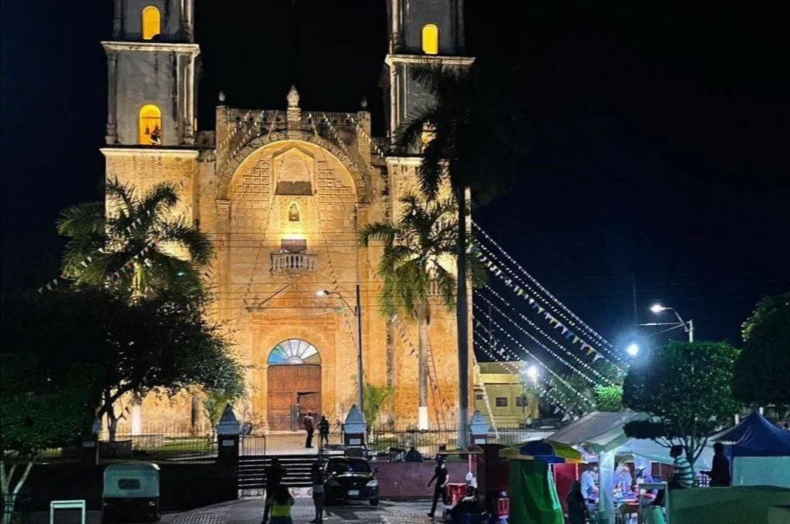

Iglesia
La Iglesia de San Pedro Apóstol es uno de los principales atractivos de Peto, Yucatán. Construida en el siglo XVII, esta iglesia colonial es un ejemplo impresionante de la arquitectura religiosa de la época. Su fachada ornamentada y sus detalles interiores cautivan a los visitantes, quienes pueden admirar tanto su belleza arquitectónica como su importancia histórica para la comunidad local.
Cenotes
Peto y sus alrededores están bendecidos con una gran cantidad de cenotes, formaciones naturales únicas que ofrecen experiencias de natación y buceo incomparables. Estos cuerpos de agua subterráneos son una parte integral del paisaje de la región y proporcionan un refugio refrescante para los residentes y los visitantes que desean explorar la belleza natural de Yucatán.
Feria
La Feria Anual de Peto es un evento destacado en el calendario de la ciudad. Durante varios días, la feria ofrece entretenimiento, comida local, juegos mecánicos y actividades para todas las edades. Los habitantes de Peto y los turistas se reúnen para disfrutar de la atmósfera festiva, celebrar la cultura local y crear recuerdos inolvidables en esta vibrante celebración.
Centro
El centro de Peto es el corazón de la ciudad, donde convergen la historia, la cultura y la vida cotidiana. Con sus pintorescas calles empedradas y sus edificios coloniales bien conservados, el centro invita a los visitantes a dar un paseo tranquilo mientras exploran las tiendas locales, los restaurantes y los lugares de interés. Es un lugar perfecto para sumergirse en el encanto auténtico de Yucatán.

Casa de la Cultura
La Casa de la Cultura de Peto es un centro vital para la preservación y promoción de las artes y tradiciones locales. Ofrece una variedad de actividades culturales, incluyendo clases de danza, música, teatro y artesanías. Además, la Casa de la Cultura alberga exposiciones de arte, eventos comunitarios y talleres educativos, brindando oportunidades para que residentes y visitantes se sumerjan en la rica herencia cultural de la región.